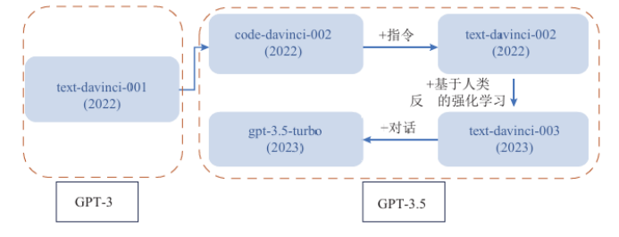

什么是自然语言处理？
自然语言处理（Natural Language Processing，简称NLP）是人工智能的核心领域之一，旨在通过计算机技术实现对人类语言的深度理解和生成。它结合了计算机科学、人工智能和语言学，使计算机能够理解、解释和生成人类语言。
NLP技术使计算机能够：
- 理解文本和语音中的含义
- 识别语言中的情感和意图
- 翻译不同语言之间的文本
- 生成人类可读的文本内容
- 从非结构化文本中提取信息
自1956年人工智能概念提出以来，NLP经历了从符号主义到统计学习、再到深度学习的技术范式转变。早期研究依赖手动规则和语言学理论，而2013年后，Word2Vec、BERT等预训练模型的出现推动了NLP的跨越式发展。NLP技术已广泛应用于智能客服、教育、医疗等领域，但其在复杂语义理解、低资源场景下的适应性等方面仍存在局限。
NLP的技术发展脉络
自然语言处理的发展历程可以划分为三个主要阶段：规则驱动阶段、统计学习阶段和深度学习阶段，每个阶段都有其独特的技术特点和突破。
1950s-1980s
规则驱动阶段：语言学理论的早期实践
自然语言处理的起源可追溯至20世纪50年代的机器翻译尝试。1954年，乔治敦大学开展了首个机器翻译实验，通过手动编写俄语-英语语法规则库，实现了60个句子的翻译，标志着规则驱动范式的开端。
这一阶段的核心思想是基于乔姆斯基形式语言理论，通过构建上下文无关文法（CFG）描述句子结构，例如利用短语结构规则（如"句子→名词短语+动词短语"）进行语法分析。
典型代表如1960年的SIR系统（Semantic Information Retrieval），通过人工定义语义模式处理英语查询，但仅能应对有限领域的简单问题。
主要局限性：
- 规则覆盖率不足：自然语言存在大量例外用法（如习语、隐喻），人工编写规则难以穷尽
- 鲁棒性差：输入稍有偏离规则即导致解析失败，如"台上坐着主席团"这类汉语特殊句式会突破传统语法规则框架
1990s-2010s
统计学习阶段：数据驱动的范式转型
随着大规模语料库的兴起，统计方法在NLP中逐步取代规则系统。1988年，IBM提出的统计机器翻译模型（IBM Model 1-5）首次将翻译视为概率问题，通过词对齐概率建模实现双语转换。
这一时期的关键技术包括：
- 隐马尔可夫模型（HMM）：用于词性标注任务，将词性序列视为隐藏状态，单词序列视为观测状态，通过Viterbi算法解码最优词性路径。例如，1993年Brill基于HMM构建的词性标注器准确率突破96%
- 条件随机场（CRF）：解决HMM的标注偏置问题，通过全局归一化建模标签间依赖关系，在命名实体识别任务中成为主流方法
- n-gram语言模型：通过计算"前n-1个词预测第n个词"的概率分布（如P(w3|w1,w2)），实现文本生成与语音识别，例如Google的语音识别系统曾依赖4-gram模型提升准确率
主要挑战：
- 数据稀疏性：高阶n-gram在小语料库中出现频率极低，需通过拉普拉斯平滑等技术缓解
- 特征工程依赖：模型性能高度依赖人工设计的特征（如词频、句法特征），难以迁移至新任务
2010s至今
深度学习阶段：表征学习的革命
2013年，Mikolov等人提出的Word2Vec开启了NLP的深度学习时代。该模型通过Skip-gram和CBOW架构，将单词映射为稠密向量（如300维），使语义相近的词在向量空间中距离更近（如"国王-男人+女人≈王后"）。
预训练模型的演进：
- ELMo（2018）：首次引入双向LSTM预训练，通过动态生成词向量解决一词多义问题，例如"bank"在"银行"和"河岸"语境下的向量表示不同
- BERT（2018）：基于双向Transformer架构，通过掩码语言模型（MLM）和下一句预测（NSP）预训练，在11项NLP任务中刷新纪录。其核心创新是自注意力机制，允许模型同时关注"我今天吃了苹果"中"吃"与"苹果"的语义关联，突破了RNN的长距离依赖限制
- GPT系列（2018-2023）：从GPT-1的1.17亿参数到GPT-4的万亿级参数，通过自回归生成模式（预测下一个词）实现文本理解与生成。GPT-3凭借少样本学习能力，可完成代码生成、创意写作等复杂任务

图2：5个GPT-3和GPT-3.5系列模型的迭代过程
架构革新：
Transformer的并行计算特性彻底改变了NLP建模方式。传统RNN处理长度为L的文本需O(L)时间，而Transformer通过自注意力机制将时间复杂度降为O(L²)，配合多头注意力（Multi-Head Attention）实现不同语义子空间的并行处理。例如，Google的T5模型（Text-to-Text Transfer Transformer）通过统一的文本生成框架，将问答、翻译等任务转化为"输入文本→输出文本"的形式，推动NLP向通用化发展。
NLP的核心技术创新
词嵌入与语义表示的进化
静态词嵌入：
- Word2Vec：通过Skip-gram和CBOW架构学习词向量
- GloVe：结合全局词共现矩阵与局部上下文，提升了向量表示的语义准确性
- FastText：引入子词单元（如"apple"拆分为"app""ple"），有效处理未登录词（OOV）问题，在低资源语言中表现优异
动态词嵌入：BERT开创的预训练范式使词向量依赖上下文动态生成。例如，在"他打碎了玻璃"和"玻璃公司"中，"玻璃"的向量表示分别侧重"物体"和"企业"语义，通过Transformer的自注意力机制实现精准表征。
结构化表示：图神经网络（GNN）被引入NLP，例如在语义角色标注任务中，将句子视为句法依存图，通过节点间的消息传递捕捉论元关系（如"主语-谓语-宾语"结构）。
序列建模的范式升级
RNN的局限性与改进：传统RNN因梯度消失问题难以处理长文本（如超过50词的句子），而LSTM（1997）通过门控机制（遗忘门、输入门、输出门）选择性保留历史信息。例如，在情感分析中，LSTM可记住前文的否定词（如"不""并非"），正确判断"这部电影不精彩"的负面情感。
Transformer的统治力：自注意力机制通过计算"查询向量（Query）-键向量（Key）-值向量（Value）"的加权和，实现对长距离依赖的建模。例如，在机器翻译中，模型可直接关注源语言句子中的关键词（如"中国"对应目标语言的"China"），无需按顺序处理每个词。2017年，Google的Transformer模型在WMT翻译任务中首次超越基于RNN的系统，证明了并行计算的优势。
预训练模型的规模化与专业化
通用预训练模型：除BERT、GPT外，RoBERTa（2019）通过动态掩码、更长训练时间提升性能；ALBERT（2020）通过参数因式分解和跨层参数共享，将模型规模压缩至12M参数，适合边缘设备部署。
领域适配模型：针对医疗、法律等专业领域，出现了BioBERT（基于PubMed文献预训练）、LawBERT（基于法律文书微调）等模型。例如，BioBERT在医学命名实体识别中准确率比通用BERT提升8.3%，因其预训练数据包含"癌症分期""药物相互作用"等专业术语。
NLP的基本任务
文本分类
将文本分配到预定义的类别中，应用包括：
- 情感分析：判断文本表达的情感倾向，如产品评论的正面/负面分类
- 垃圾邮件检测：识别垃圾邮件与正常邮件
- 主题分类：确定文本的主题或领域，如新闻分类
- 意图识别：理解用户查询的目的，如查询天气、预订机票等
序列标注
为文本序列中的每个元素分配标签，应用包括：
- 词性标注：标识每个词的词性（名词、动词等）
- 命名实体识别：识别文本中的人名、地名、组织名等
- 分块：识别句子中的短语结构
文本生成
生成自然、流畅的文本，应用包括：
- 机器翻译：将文本从一种语言翻译成另一种语言
- 文本摘要：生成文档的简短摘要
- 对话系统：生成对话回复
- 内容创作：生成文章、故事或诗歌
信息提取
从非结构化文本中提取结构化信息，应用包括：
- 关系提取：识别实体之间的关系，如"乔布斯创立了苹果公司"中的"创立"关系
- 事件提取：识别文本中描述的事件及其参与者
- 观点挖掘：提取文本中表达的观点和态度
问答系统
回答用自然语言提出的问题，类型包括：
- 事实型问答：回答关于事实的问题（如"北京的人口是多少？"）
- 开放域问答：回答广泛领域的问题
- 阅读理解：基于给定文本回答问题
智能对话系统
现代对话系统采用分层架构：
- 对话状态跟踪（DST）：记录用户意图（如"查询北京天气"）和上下文（如"明天""后天"的时间维度）
- 政策学习（Policy Learning）：通过强化学习决定回复策略，例如用户问"今天天气如何"时，优先返回实时温度而非历史数据
- 自然语言生成（NLG）：将结构化信息（如温度22℃，晴）转为自然语言"北京今天晴，气温22-28℃"
文本预处理技术
文本预处理是NLP流程中的重要步骤，为后续模型提供规范化的输入：
基础预处理步骤
- 分词：将文本分割成单词或词组，中文分词尤为复杂（如"研究生"可分为"研究/生"或"研究生"）
- 词形还原：将词转换为其基本形式（如"running"→"run"）
- 词干提取：提取词的词干（如"fishing"→"fish"）
- 停用词去除：去除常见但信息量少的词（如"the"、"is"）
- 标准化：处理大小写、标点、特殊字符等
文本表示方法
将文本转换为计算机可处理的数值表示是NLP的关键步骤：
- One-Hot编码：将每个词表示为一个只有一个元素为1，其余为0的向量
- 词袋模型(BoW)：统计文档中每个词的出现次数
- TF-IDF：考虑词频和逆文档频率的文本表示方法
- 词嵌入：将词映射到低维连续向量空间（如Word2Vec、GloVe）
- 上下文嵌入：生成考虑上下文的词表示（如BERT、ELMo）
高级预处理技术
- 命名实体规范化：将不同表达的同一实体统一（如"北京""北京市""Beijing"→"北京"）
- 共指消解：识别文本中指代同一实体的不同表达（如"乔布斯...他"中的"他"指代"乔布斯"）
- 句法分析：构建句子的句法树，识别主谓宾等成分
- 依存分析：确定句子中词与词之间的依存关系
NLP评估指标
评估NLP系统性能的常用指标包括：
分类任务指标
- 准确率(Accuracy)：正确预测的样本比例
- 精确率(Precision)：被预测为正类的样本中真正为正类的比例
- 召回率(Recall)：真正为正类的样本中被正确预测的比例
- F1分数：精确率和召回率的调和平均
生成任务指标
- BLEU：评估生成文本与参考文本的n-gram重叠度，广泛用于机器翻译评估
- ROUGE：评估生成摘要与参考摘要的重叠度，常用于文本摘要任务
- METEOR：考虑同义词和词形变化的评估指标
- 困惑度(Perplexity)：评估语言模型预测下一个词的能力，值越低表示模型越好
人工评估
对于许多NLP任务，特别是生成任务，人工评估仍然是重要的评估方法，通常考虑以下方面：
- 流畅性：文本是否自然流畅
- 连贯性：内容是否逻辑连贯
- 相关性：内容是否与任务相关
- 信息性：是否提供了有用信息
- 多样性：生成内容是否多样而非重复
NLP的挑战与未来方向
数据困境：质量与数量的双重挑战
低资源语言处理：世界上70%的语言缺乏大规模标注数据，如斯瓦希里语的机器翻译准确率仅为58%（中英翻译为85%）。解决方案包括：
- 跨语言迁移：利用英语预训练模型通过"语言无关表征"迁移至小语种，例如XLM-R模型在100种语言的文本分类中平均准确率达77%
- 无监督翻译：通过回译（Back-Translation）技术，将目标语言句子译为源语言再译回，生成伪平行语料
数据偏见问题：训练数据中的性别偏见会导致模型歧视，如某招聘AI曾对"女性"简历打分偏低。解决方法包括：
- 数据去偏：删除含有偏见的样本（如"护士=女性""工程师=男性"的标注）
- 公平性约束：在损失函数中加入公平性正则项，确保模型对不同群体的预测准确率差异小于5%
模型安全：鲁棒性与可解释性的博弈
对抗攻击威胁：恶意修改文本可误导模型，如在"这是一篇正面评论"中插入特殊符号"这是一篇₪正面评论"，部分情感分析模型会误判为负面。防御手段包括：
- 对抗训练：用精心设计的对抗样本（如"好→不好"的语义翻转样本）增强模型鲁棒性
- 模型蒸馏：将复杂模型的知识迁移至简单模型，提升抗干扰能力
黑箱解释难题：Transformer的万亿参数使其决策过程难以解释。可解释性技术包括：
- 注意力可视化：通过热力图显示模型关注的关键词，如翻译"我爱中国"时，"中国"的注意力权重最高
- 因果归因：LIME（Local Interpretable Model-agnostic Explanations）通过局部近似模型解释单个预测结果，例如"该文本被判定为正面，主要因为包含'精彩''推荐'等词"
多模态融合：从语言理解到世界认知
视觉-语言模型：CLIP（Contrastive Language-Image Pre-training）通过对比图像与文本描述的语义相似度，实现零样本图像分类。例如，输入"一只猫坐在沙发上"的文本，模型可从图片库中准确检索对应图像。
具身语言学习：机器人通过"语言指令+视觉感知+物理交互"学习任务，如"把红色杯子放到桌子上"。这类模型需解决：
- grounded language：将词语与现实物体关联（如"红色"对应RGB颜色空间）
- 物理约束：考虑物体重量、摩擦力等物理属性对动作的影响
伦理与治理：技术发展的边界探索
算法伦理框架：欧盟《人工智能法案》要求高风险NLP系统（如司法判决辅助工具）需通过伦理审查，包括：
- 非歧视性：对不同种族、性别群体的预测偏差≤3%
- 可问责性：保留模型决策的日志记录，便于事后审计
- 透明度：向用户说明"模型可能存在10%的错误率"
全球治理协作：各国正探索NLP技术的跨境监管，如中美欧联合制定的《生成式AI内容溯源标准》要求AI生成文本需包含可验证的元数据（如生成模型、训练数据来源），以遏制虚假信息传播。
语言的复杂性挑战
- 歧义性：语言表达常常存在多种解释，如"我看见了一个人，他拿着望远镜"中的"拿着望远镜"可能修饰"我"或"人"
- 上下文依赖：理解语言需要考虑上下文，如"这很酷"的含义取决于讨论的主题
- 隐含信息：人类交流中有大量隐含但未明确表达的信息，如"能把窗户关上吗？"实际是一个请求而非问题
- 语言变化：语言不断演变，新词和新用法不断出现，如网络用语"内卷""躺平"
学习资源
以下是一些学习NLP的优质资源：
在线课程
- 斯坦福大学CS224n：深度学习自然语言处理
- Coursera上的自然语言处理专项课程
- Fast.ai的NLP课程
- Hugging Face的NLP课程
- 吴恩达的深度学习系列课程
书籍
- 《自然语言处理综论》(Speech and Language Processing) - Dan Jurafsky & James H. Martin
- 《Python自然语言处理》(Natural Language Processing with Python) - Steven Bird, Ewan Klein & Edward Loper
- 《深度学习自然语言处理》(Neural Network Methods for Natural Language Processing) - Yoav Goldberg
- 《统计自然语言处理》- 宗成庆
- 《自然语言处理入门》- 何晗
工具与库
- NLTK：Python自然语言处理工具包，适合入门学习
- spaCy：工业级自然语言处理库，性能优异
- Transformers：Hugging Face的预训练模型库，提供BERT、GPT等模型的简易接口
- Gensim：主题建模和文档相似性分析库
- Stanford CoreNLP：Java自然语言处理工具包
- jieba：中文分词库
- LTP：哈工大语言技术平台，提供中文分词、词性标注等功能
数据集
- GLUE：通用语言理解评估基准
- SQuAD：斯坦福问答数据集
- CoNLL：计算自然语言学会议数据集
- IMDB：电影评论情感分析数据集
- WMT：机器翻译数据集
- LCQMC：大规模中文问题匹配语料
- CMRC：中文机器阅读理解数据集
研究论文
了解NLP最新进展的重要论文：
- 《Attention Is All You Need》(2017) - Transformer架构的奠基之作
- 《BERT: Pre-training of Deep Bidirectional Transformers for Language Understanding》(2018) - BERT模型论文
- 《Language Models are Few-Shot Learners》(2020) - GPT-3论文
- 《Training language models to follow instructions with human feedback》(2022) - ChatGPT的RLHF方法论文